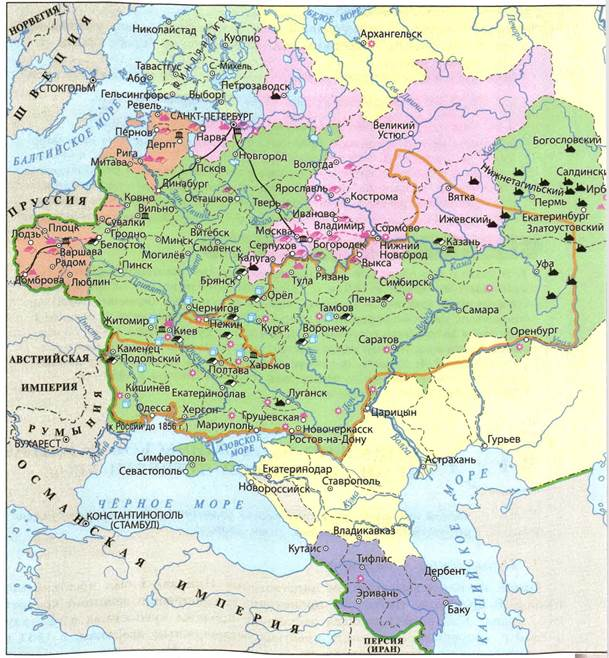
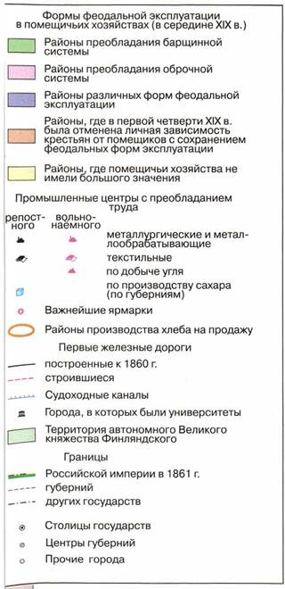
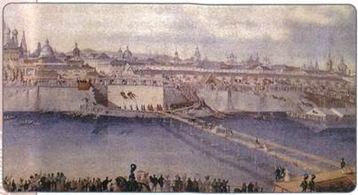
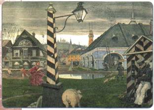
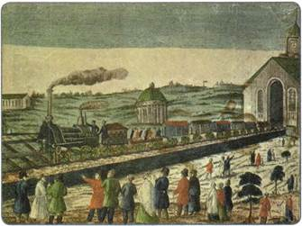
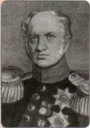

Почему в первой половине XIX в. по уровню развития промышленности Россия стала быстро отставать от передовых стран Запада?
1. Положение в деревне
Одной из ключевых проблем царствования Николая I был крестьянский вопрос. В правление Николая I происходило ограничение действия крепостного права. Так, с 1841 г. была запрещена продажа крепостных в розницу; с 1843 г. запрещалось покупать крестьян безземельным дворянам; с 1847 г. крестьяне имели право выкупаться на волю с землёй при продаже имения помещика за долги; в 1848 г. крестьянам всех категорий было разрешено приобретать недвижимость. Государство впервые в этот период стало систематически следить (при помощи III отделения) за тем, чтобы права крестьян не нарушались помещиками, и даже наказывать помещиков за эти нарушения.
На протяжении всего правления Николая I работали секретные комитеты по крестьянскому вопросу, которые пытались разработать меры по облегчению положения крестьян и подготовить их к будущей отмене крепостного права. Они занимались «улучшением быта» крестьян. Впервые была начата программа массового крестьянского образования. Увеличилось число крестьянских школ в стране. Если в 1838 г. было около 60 школ для крестьян (в которых училось примерно 1,5 тыс. учеников), то в 1856 г. школ стало более 2500 (в них училось более 100 тыс. учеников).
Экономическое развитие России в первой половине XIX в.


Особенно широко государство проводило создание школ (а также медпунктов, дорог) на территориях, населённых государственными крестьянами. Это происходило в рамках уже упоминавшейся реформы П. Д. Киселёва в 1837—1841 гг.
Несмотря на ограниченное действие многих указов Николая I и отсутствие должной поддержки со стороны помещиков в вопросах облегчения положения крестьян, все эти мероприятия имели важное значение для подготовки условий и поиска механизмов будущей отмены крепостного права.
2. Развитие промышленности
В 1830—1840-е гг. в России начался промышленный переворот, который завершился в 1870—1880-е гг. Произошёл переход от мануфактуры к фабрике, от ручного труда к машинному производству. Начали формироваться новые социальные слои: буржуазия (из купечества, богатых горожан, «капиталистых» крестьян, предприимчивого дворянства) и пролетариат (из крестьянства и низших городских слоёв).
Начало промышленного переворота было обусловлено рядом предпосылок, вызревавших в предшествующее столетие: техническим прогрессом (появлением паровой тяги, новых механизмов); формированием рынка вольнонаёмной рабочей силы в связи с сокращением количества крепостных; первоначальным накоплением капитала, позволившим строить крупные заводы.
Промышленный переворот в России имел свои особенности. Происходило заимствование многих технических устройств из развитых стран Европы. Он начался в условиях сохранения крепостного права и феодальных пережитков. В условиях крепостничества наблюдалась нехватка свободной рабочей силы и медленное техническое переоснащение промышленности, а особенно сельского хозяйства. Промышленный переворот шёл не быстро, массовый переход к машинному производству начался только во второй половине 1850-х гг.

Закладка нового металлического моста через Москву-реку в 1838 г. Художник К. К. Гампельн
Другой особенностью стало то, что не все отрасли промышленности в одинаковой степени были захвачены промышленным переворотом. Он начался в хлопчато-бумажной промышленности. Потом развернулся в свёкло-сахарной, писчебумажной отраслях. Активно были вовлечены в процесс перехода к фабрике текстильная, металлоперерабатывающая и горнозаводская промышленность. А вот мебельная и кожевенная отрасли вплоть до начала XX в. оставались преимущественно на ручном труде. Слабым местом российской промышленности оставалось машиностроение.
Для поддержки промышленного развития в 1828 г. правительство создало Мануфактурный совет, который контролировал развитие промышленности, организовывал крупные промышленные выставки, регулировал конфликты фабрикантов и рабочих.
3. Города
Индустриальное развитие России сопровождалось урбанизацией. Во второй четверти XIX в. выросло количество городов и городского населения. Крупнейшими городами империи были Петербург (число жителей составляло около 540 тыс. человек) и Москва (около 460 тыс.).
Города создавались на вновь присоединённых территориях, вырастая из опорных пунктов и военных укреплений, на основе крепостей. Так возникли Кисловодск (1830), Пятигорск (1830), Новороссийск (1838), Анапа (1846), Чита (1851), Николаевск-на-Амуре (1856) и др.

Город в николаевское время. Художник М. В. Добужинский
Начавшийся промышленный переворот привёл к возникновению в России фабричных центров. Многие из них не обладали правами городов, но фактически являлись ими. Некоторые фабричные центры со временем получали права городов. Например, фабричное село Павлово Московской губернии стало городом Павловским Посадом (1844).
4. Транспорт и торговля
Одной из проблем, тормозивших капиталистическое развитие России, было недостаточное развитие транспорта и путей сообщения. Летом были востребованы речные пути, зимой — санные. Основной тягловой силой оставалась лошадь.
Промышленный переворот затронул транспорт чуть позже, во второй половине XIX в., уже в пореформенный период. Однако и в период правления Николая I транспортная сеть неуклонно развивалась. Особенно это касается железных дорог. В 1837 г. в России появилась первая железная дорога: Петербург — Царское Село. В 1851 г. была построена дорога Петербург — Москва (Николаевская железная дорога). В 1842 г. был образован специальный Департамент железных дорог. Постройка вагонов и оборудования стала стимулом к развитию машиностроения.
Велось также активное строительство шоссейных дорог. Планированием и организацией строительства ведало образованное ещё в 1820 г. Главное управление путей сообщения.
Торговый баланс России в этот период был положительным, чему способствовала политика протекционизма. Главным предметом экспорта являлся хлеб. Основным направлением внешней торговли оставалась торговля с европейскими странами (около 90 % от всего торгового оборота). Ведущим торговым партнёром России по-прежнему была Англия. На азиатском направлении велась активная приграничная торговля с Китаем.
Что касается внутренней торговли, то во второй половине XIX в. стало возрастать значение постоянной магазинной торговли, хотя в хлеборобных районах, особенно на Украине, сохранялось значение ярмарочной торговли.

Железная дорога Москва — Петербург. Рисунок XIX в.
5. Реформа Е. Ф. Канкрина
В 1839—1843 гг. под руководством министра финансов графа Е. Ф. Канкрина была проведена денежная реформа с целью укрепить позиции российской денежной системы. Обесценившиеся ассигнации были заменены кредитными билетами, которые правительство обменивало на серебро по строго установленному курсу. Во внешней торговле главным средством платежа стал серебряный рубль, все внешние сделки исчислялись в серебре.
Хотя в 1830—1840-х гг. развивались товарно-денежные отношения, в России преобладало натуральное хозяйство. Объём покупаемых предметов потребления был невелик, поэтому деньги требовались в небольших количествах. В условиях неразвитого рынка и путей сообщения цены на продукты были низкими, а промышленные товары, чаще всего импортные, приобретались небольшим кругом лиц (чиновниками, купечеством, военными). Денежный оборот осуществлялся преимущественно с казной. Поэтому денежная реформа 1839—1843 гг. обеспечила относительно устойчивое денежное обращение, помогла снизить инфляцию, стабилизировать финансовую систему России.

Е. Ф. Канкрин
ПОДВЕДЁМ ИТОГИ
Во второй четверти XIX в. в Российской империи продолжались процессы, связанные с промышленным переворотом. Однако они происходили в условиях сохранения крепостного права и сословных различий. В результате, несмотря на определённые успехи в промышленном развитии, к середине XIX в. всё более заметным становилось отставание России от индустриально развитых стран. Если в XVIII в. наша страна занимала первое место в мире по производству и вывозу чугуна, то к середине XIX в. она была только на восьмом. Россия выплавляла металла в 12 раз меньше, чем Англия. Начавшаяся в 1853 г. Крымская война показала военно-техническое отставание России от индустриально развитых стран-соперниц — Англии и Франции. Это подтолкнуло власти к отмене крепостного права и буржуазным реформам 1860—1870-х гг.
Вопросы и задания для работы с текстом параграфа
1. Объясните, почему на протяжении первой половины XIX в. кризис феодально-крепостнической системы проявлялся всё более явно. 2. Перечислите особенности промышленного переворота в России. 3. В чём состояла главная идея финансовой реформы Е. Ф. Канкрина? 4. Какие принципиально новые черты появились в отечественной торговле во второй четверти XIX в.?
Думаем, сравниваем, размышляем
1. Объясните, почему в отношении государственных крестьян власть предпринимала более активные попытки реформ, нежели это было по отношению к помещичьим крестьянам. 2. Поразмышляйте, насколько действенными были меры, предпринятые правительством в отношении государственных крестьян в 1830— 1840-е гг. 3. Поясните, почему наличие транспортных путей важно для активного развития экономики страны. 4. Привлекая дополнительную информацию, соберите материал о развитии промышленности в вашем регионе в XIX в. Напишите эссе (в тетради). 5. Узнайте, привлекая Интернет и дополнительную литературу, о строительстве первой железной дороги в России. Подготовьте краткое сообщение.